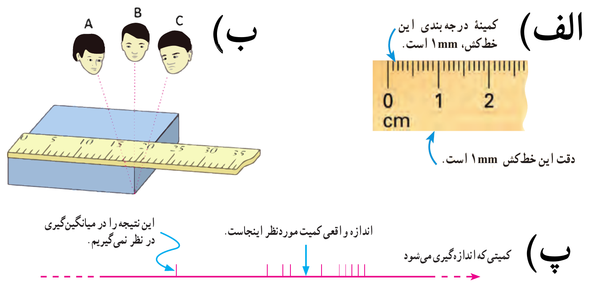

اندازه گیری و کمیت های فیزیکی
تعریف 3 نمایش کمیتهای نردهای، عددی یا اسکالر:
- جرم: \(m = 65 kg\)
- زمان: \(t = 39 s\)
- طول: \(l = 168 cm\)
- مسافت طی شده: \(\Delta l = 20 m\)
- تندی: \(\Delta s = 30 \frac{m}{s}\)
نمایش کمیتهای برداری:
- مکان: \(\vec{x} = 5 cm\vec{i}\)
- جابجایی: \(\Delta\vec{x} = - 24 \frac{m}{s}\vec{i}\)
- سرعت: \(\vec{v} = 6 \frac{m}{s}\vec{j}\)
- وزن: \(\vec{F} = 23 N \vec{i} + 60 N \vec{j}\)
شکل 4: هر کمیت نردهای را باید با عدد و یکای مناسب آن بیان کنیم. هر کمیت برداری را باید با عدد، یکای مناسب و جهت آن بیان کنیم.
مثال 1 کدام یک از کمیتهای زیر نردهای و کدام یک برداری است؟
مسافت، سرعت، جرم، انرژی، نیرو، فشار، کار شتاب، جریان الکتریکی، وزن، جابهجایی دما، بار الکتریکی، شدت روشنایی
نمایش پاسخ
نردهای: مسافت، جرم، انرژی، فشار، کار، جریان الکتریکی، دما شدت روشنایی، بار الکتریکی
برداری: سرعت، نیرو، شتاب، وزن، جابجایی
دستگاه بین المللی یکاها
مثال 2 اگر یکای طول را به صورت فاصله نوک بینی تا نوک انگشتان دست کشیده شده بگیریم، چه مزایا و چه معایبی دارد؟ (پرسش متن کتاب تجربی-ریاضی)
نمایش پاسخ
- مزایا: در دسترس بودن
- معایب: متفاوت بین افراد مختلف
| کمیت | نام یکا | نماد یکا |
|---|---|---|
| طول | متر | \(m\) |
| جرم | کیلوگرم | \(kg\) |
| زمان | ثانیه | \(s\) |
| دما | کِلوین | \(K\) |
| مقدار ماده | مُول | \(mol\) |
| جریان الکتریکی | آمپر | \(A\) |
| شدت روشنایی | کَندِلا (شمع) | \(cd\) |
تعریف 4 یکاهای اصلی یکاهایی هستند که:
- تعریف مستقل
- دسترس پذیری
- غیر قابل تغییر
- قابلیت باز تولید
تعریف 5 کمیت فرعی از روی کمیت اصلی تعریف میشود.
تعریف 6 یکای طول (متر یا m)
- یک ده میلیونیم فاصله استوا تا قطب شمال
- فاصله میان دو خط حک شده در نزدیکی دو سر میلهای از جنس پلاتین-ایریدیوم، در دمای صفر درجه سلسیوس
- مسافت طی شده نور در در مدت زمان \(\frac{1}{299792458}\) ثانیه در خلاء
تعریف 7 یکای جرم (کیلوگرم یا kg)،
- جرم استوانهای فلزی از جنس آلیاژ پلاتین-ایریدیوم
تعریف 8 یکای زمان (ثانیه یا s)
- \(\frac{1}{86400}\) میانگین روز خورشیدی
تعریف 9 به اندازهگیری مدت زمان بین شروع و پایان یک رویداد بازه زمانی گویند.
\[ \begin{aligned} \overset{\overset{\large Delta}{\uparrow}}{\Delta} t & = \overset{\overset{\large final}{\uparrow}}{t_{f}} - \overset{\overset{initial}{\uparrow}}{t_{i}} \\ & = t' - t \\ & = t'' - t' \\ & = t_{2} - t_{1} \\ & = t - t_{0} \\ \overset{\text{if } t_{0} = 0}{\Longrightarrow} \Delta t & = t \end{aligned} \]
تعریف 10 در فیزیک، تغییر هر کمیت را نسبت به زمان، (\(\cfrac{\Delta x}{\Delta t}\)) را آهنگ آن کمیت مینامیم.
نکته. \((\prime)\) پرایم - \((\prime\prime)\) سکوند یا زگوند
| نام کمیت | نماد کمیت | نام یکا | یکای SI | یکای فرعی |
|---|---|---|---|---|
| سرعت | \(v\) | متر بر ثانیه | \(\frac{m}{s}\) | \(\frac{m}{s}\) |
| شتاب | \(a\) | متر بر مجذور ثانیه | \(\frac{m}{s^2}\) | \(\frac{m}{s^2}\) |
| نیرو | \(F\) | نیوتن | \(N\) | \(\frac{kg.m}{s^2}\) |
| فشار | \(P\) | پاسکال | \(Pa\) | \(\frac{kg}{m.s^2}\) |
| انرژی، گرما، کار | \(E, Q, W\) | ژول | \(J\) | \(\frac{kg.m^2}{s^2}\) |
| توان | \(P\) | وات | \(W\) | \(\frac{kg.m^2}{s^{3}}\) |
| گرمای ویژه | \(C\) | ژول در کلوین بر کیلوگرم | \(\frac{J}{kg.K}\) | \(\frac{m^2}{s^{2}.K}\) |
مثال 3 یکای کمیتهای فرعی بالا را با یکای کمیتهای اصلی بیان کنید.
نمایش پاسخ
اینارو میشه خیلی راحت از روی فرمولاشون با یکای اصلی نوشت.
\[ \require{cancel} \begin{aligned} \overset{\overset{N}{\uparrow}}{F} & = \overset{\overset{kg}{\uparrow}}{m} \overset{\overset{\frac{m}{s^{2}}}{\uparrow}}{a} & \Rightarrow N & = \cfrac{kg.m}{s^{2}} \\ \overset{\overset{Pa}{\uparrow}}{P } & = \cfrac{\overset{\overset{\frac{kg.m}{s^{2}}}{\uparrow}}{F}}{ \underset{\underset{m^2}{\downarrow}}{A}} & \Rightarrow Pa & = \cfrac{kg}{s^{2}m} \\ \overset{\overset{J}{\uparrow}}{Q,W} & = \overset{\overset{\frac{kg.m}{s^{2}}}{\uparrow}}{F} \overset{\overset{m}{\uparrow}}{d} &\Rightarrow J & = \cfrac{kg.m^2}{s^{2}} \\ \overset{\overset{W}{\uparrow}}{P} & = \cfrac{ \overset{\overset{\frac{kg.m^2}{s^{2}}}{\uparrow}}{W}}{ \underset{\underset{s}{\downarrow}}{t} } & \Rightarrow W & = \cfrac{kg.m^2}{s^{3}} \\ \overset{\overset{\frac{J.K}{kg}}{\uparrow}}{C} & = \cfrac{ \overset{\overset{\frac{kg.m^2}{s^{2}}}{\uparrow}}{Q}}{ \underset{\underset{kg}{\downarrow}}{m} \underset{\underset{K}{\downarrow}}{\Delta \theta} } & \Rightarrow \frac{J}{kg.K} & = \cfrac{m^2}{s^{2}.K} \end{aligned} \]مثال 4 جرم و زمان از \(\dots\dots\) و کیلوگرم و ثانیه از \(\dots\dots\) در \(SI\) میباشد. (ریاضی خارج ۸۶)
- یکاهای فرعی - یکاهای اصلی
- یکاهای اصلی - کمیتهای فرعی
- کمیتهای اصلی - یکاهای اصلی
- کمیتهای اصلی - کمیتهای فرعی
نمایش پاسخ
گزینه ۳مثال 5 \(\dots\dots\) از کمیتهای اصلی و \(\dots\dots\) از کمیتهای فرعی میباشند. (ریاضی داخل ۸۶)
- حجم و جرم - زمان و انرژی
- جرم و زمان - طول و نیرو
- طول و جرم - مساحت و نیرو
- نیرو و دما - سرعت و جریان الکتریکی
نمایش پاسخ
گزینه ۳مثال 6 در میان کمیتهای دما «دما، سرعت، فشار، زمان، طول، نیرو و تندی» به ترتیب از راست به چپ، به تعداد \(\dots\dots\) از کمیتهای برداری و \(\dots\dots\) از کمیتهای اصلی وجود دارد. (ریاضی ۸۶)
- ۲، ۴
- ۴، ۳
- ۲، ۳
- ۴، ۴
نمایش پاسخ
گزینه ۳:
- برداری: سرعت، نیرو
- اصلی: دما، زمان، طول
مثال 7 در کدام یک از موارد زیر، همه کمیتها فرعی هستند؟ (سراسری ۹۸ تجربی داخل)
- جرم، زمان، فشار
- چگالی، تندی، انرژی
- چگالی، جریان الکتریکی، حجم
- شدت روشنایی، مقدار ماده، زمان
نمایش پاسخ
گزینه ۲:مثال 8 در کدام یک از موارد زیر، همه کمیتها فرعی هستند؟ (سراسری ۹۸ تجربی خارج)
- دما، نیرو، فشار
- فشار، زمان، سرعت
- جریان الکتریکی، جرم، نیرو
- دما، جریان الکتریکی، جرم
نمایش پاسخ
گزینه ۴:سازگاری یکاها
نکته. در دو طرف هر معادلهای باید یکاها با هم سازگار باشند.
مثال 9 فرض کنید که برای متحرکی،بین نیروی وارد بر متحرک (\(F\)) و مکان متحرک (\(x\))، رابطه \(F=-kx\) برقرار است. یکای \(k\) در \(SI\) کدام است؟
- کیلوگرم در مربع ثانیه
- کیلوگرم در مکعب ثانیه
- کیلوگرم بر مربع ثانیه
- کیلوگرم بر مکعب ثانیه
نمایش پاسخ
گزینه ۳:
\[ \require{cancel} \begin{aligned} F & = -kx \\ \Rightarrow k & = - \cfrac{F}{x} = \cfrac{ \overset{\overset{1kg}{\uparrow}}{m} \overset{ \large \overset{\frac{1\cancel{m}}{1s^{2}}}{\uparrow} }{a} }{\large \underset{\underset{1\cancel{m}}{\downarrow}}{x}} \\ & = 1 \cfrac{kg}{s^{2}} \end{aligned} \]پیشوندهای یکاها
| مقیاس | نماد | پیشوند | توان ۱۰ | مهم |
|---|---|---|---|---|
| \(0.000000000000000000000001\) | \(y\) | یوکتو | \(-24\) | \(-\) |
| \(0.000000000000000000001\) | \(z\) | زِپتو | \(-21\) | \(-\) |
| \(0.000000000000000001\) | \(a\) | اَتو | \(-18\) | \(-\) |
| \(0.000000000000001\) | \(f\) | فِمتو | \(-15\) | \(-\) |
| \(0.000000000001\) | \(p\) | پیکو | \(-12\) | \(\checkmark\) |
| \(0.000000001\) | \(n\) | نانو | \(-9\) | \(\checkmark\) |
| \(0.000001\) | \(\mu\) | میکرو | \(-6\) | \(\checkmark\) |
| \(0.001\) | \(m\) | میلی | \(-3\) | \(\checkmark\) |
| \(0.01\) | \(c\) | سانتی | \(-2\) | \(\checkmark\) |
| \(0.1\) | \(d\) | دِسی | \(-1\) | \(\checkmark\) |
| \(10\) | \(da\) | دِکا | \(1\) | \(\checkmark\) |
| \(100\) | \(h\) | هِکتو | \(2\) | \(\checkmark\) |
| \(1000\) | \(k\) | کیلو | \(3\) | \(\checkmark\) |
| \(1000000\) | \(M\) | مِگا | \(6\) | \(\checkmark\) |
| \(1000000000\) | \(G\) | گیگا | \(9\) | \(\checkmark\) |
| \(1000000000000\) | \(T\) | تِرا | \(12\) | \(\checkmark\) |
| \(1000000000000000\) | \(P\) | پِتا | \(15\) | \(-\) |
| \(1000000000000000000\) | \(E\) | اِگزا | \(18\) | \(-\) |
| \(1000000000000000000000\) | \(Z\) | زِتا | \(21\) | \(-\) |
| \(1000000000000000000000000\) | \(Y\) | یوتا | \(24\) | \(-\) |
نماد گذاری علمی
تعریف 11 نحوه نگارش اعداد به صورت نماد علمی:
\[x = m \times 10^n, \quad (1 \leq m < 10)\]
- m بزرگتر مساوی ۱ و کوچکتر از ۱۰ است.
- n عدد صحیح مثبت (به ازای تعداد اعشارهایی که به سمت چپ میرود) یا منفی (به تعداد اعشارهایی که به سمت راست میرود) است.
مثال 10 اعداد \(656800\) و \(0.00006568\) را با نماد علمی بنویسید.
\[ \begin{aligned} 656800 & = 6\overset{n=+5}{\overleftarrow{56800}}.0 \\ & = \boxed{6.568 \times 10^{+5}} \\ \end{aligned} \]
\[ \begin{aligned} 0.00006568 & = 0.\overset{n=-5}{\overrightarrow{00006}}568 \\ & = \boxed{6.568 \times 10^{-5}} \end{aligned} \]
مثال 11 کدام گزینه جرم یک زنبور عسل (\(0.00015kg\)) را به صورت نمادگذاری علمی درست بیان میکند؟
- \(0.15 \times 10^{-3} kg\)
- \(1.5 \times 10^{-4} kg\)
- \(1.5 \times 10^{-5} kg\)
- \(15 \times 10^{-5} kg\)
نمایش پاسخ
گزینه ۲تبدیل یکاها
روش 1 تبدیل زنجیرهای (تشریحی): ضریب تبدیل یکاها را به صورت زنجیرهای درهم ضرب و ساده سازی میکنیم.
مثال 12 هر سانتی متر چند کیلو متر است؟
نمایش پاسخ
\[ \require{cancel} \begin{cases} (*) & 1 = \cfrac{1 cm}{10^{-2} m} = \cfrac{10^{-2} m}{1 cm} \\ (**) & 1 = \cfrac{1 km}{10^{3} m} = \cfrac{10^{3} m}{1 km} \end{cases} \\ \begin{aligned} 1cm & = ? km \\ & = 1 cm \times 1 \times 1 \\ & \overset{(*), (**)}{{=}} 1 \cancel{cm} \times \cfrac{10^{-2} \bcancel{m}}{1 \cancel{cm}} \times \cfrac{1 km}{10^{3} \bcancel{m}} \\ & = 10^{-2} \times 10^{-3} km \\ & = 10^{-2-3} km \\ & = 10^{-5}km \end{aligned} \]مثال 13 تبدیل یکای کمیت سرعت برحسب \(\frac{km}{h}\) به یکای \(\frac{m}{s}\) را انجام دهید؟
نمایش پاسخ
\[ \require{cancel} \begin{aligned} 1 \frac{km}{h} & = ? \frac{m}{s} \\ & = 1 \frac{km}{h} \times 1 \times 1 \\ & = 1 \frac{\cancel{km}}{\bcancel{h}} \times \frac{1 \bcancel{h}}{3600s} \times \frac{1000m}{1 \cancel{km}} \\ & = \cfrac{1000}{3600} \times \frac{m}{s} \\ & = \cfrac{1}{3.6} \frac{m}{s} \\ & \Rightarrow \boxed{3.6 \cfrac{km}{h} = 1 \frac{m}{s}} \end{aligned} \]نکته. ضریب تبدیلهای مهم
\[ \begin{aligned} 1 cm^3 & = 1 cc \\ 1 L & = 1 dm^{3} = 10^{3} cm^{3} = 10^{3} cc \\ 1 m^3 & = 10^{3} L = 10^6 cm^3 = 10^6 cc \\ 1 kg & = 10^{3} gr \\ 1 h & = 60 m = 3600 s \\ 1 \cfrac{g}{L} & = 1 \cfrac{g}{dm^3} = 1 \cfrac{kg}{m^3} \\ 1 \cfrac{g}{cm^3} & = 10^{3} \cfrac{kg}{m^3} \\ 1 \frac{m}{s} & = 3.6 \cfrac{km}{h} \\ \end{aligned} \\ \]
شکل 5: \(1m^{3}=1000L=1000000cc\)
روش 2 تفریق پیشوندها (تستی): باید توان سمت راست را از توان سمت چپ تفریق کرد و در توان یکا ضرب و با توان ده نماد علمی جمع شود.
مثال 14 مقدار بار الکتریکی الکترون \(160 \times 10^{-15} \mu C\) است. مقدار این بار را برحسب کولن و با نمادگذاری علمی بنویسید. (مثال متن کتاب تجربی-ریاضی)
نمایش پاسخ
- تشریحی
\[ \require{cancel} \begin{aligned} 160 \times 10^{-15} \mu C & = 160 \times 10^{-15} \mu C \times 1 \\ & = 1.60 \times 10^{+2} \times 10^{-15}\times\cancel{\mu C} \times \cfrac{10^{-6}C}{1\cancel{\mu C}} \\ & = 1.6 \times 10^{2-15-6} \times C \\ & = \boxed{1.6 \times 10^{-19} C} \end{aligned} \]
- تستی
مثال 15 هر سانتی متر چند کیلو متر است؟
نمایش پاسخ
\[ \require{cancel} \begin{aligned} 1 \overset{\overset{-2}{\uparrow}}{c} m^{\overset{\overset{1}{\uparrow}}{}} & \overset{\underrightarrow{(-2-3)\times 1=-5}}{=} ? \overset{\overset{3}{\uparrow}}{k} m^{\overset{\overset{1}{\uparrow}}{}} \\ 1cm & = 10^{-5} km \end{aligned} \]روش 3 کوچک و بزرگ (تستی): از بزرگ به کوچک ضرب و کوچک به بزرگ تقسیم
مثال 16 هر مثقال \(4.6\) گرم و هر سیر \(16\) مثقال است، یک کیلوگرم چند مثقال است؟
نمایش پاسخ
\[ \require{cancel} \underrightarrow{ kg \overset{\times}{>} g \overset{\div}{<} mes \overset{\div}{<} sir } \\ \begin{aligned} 1 kg & = ? sir \\ & = \cfrac{1000 \times 1}{\cancelto{\cong 5}{4.6} \times 16} sir \\ & \cong 12.5 sir \end{aligned} \]نکته. یکای نجومی برابر میانگین فاصله زمین تا خورشید است \((1 AU = 1.5 \times 10^{11}m)\).
نکته. مسافتی که که نور در مدت یک سال در خلا میپیماید یک سال نوری مینامند و آن را با نماد \(ly\) نمایش میدهند. \((1ly \cong 10^{16} m)\)
مثال 17 سال نوری را برحسب متر بدست آورید. تندی نور را در خلا \(3 \times 10^{7}\) متر بر ثانیه بگیرید.
نمایش پاسخ
\[ \require{cancel} \begin{aligned} 1ly & = 1 \overset{\overset{light}{\uparrow}}{l} \times 1 \overset{\overset{year}{\uparrow}}{y} \times \overset{\overset{day}{\uparrow}}{1} \times \overset{\overset{hour}{\uparrow}}{1} \times \overset{\overset{minute}{\uparrow}}{1} \times \overset{\overset{second}{\uparrow}}{1} \\ & = \overset{light}{\overbrace{3 \times 10^{8} \cfrac{m}{\xcancel{s}}}} {\scriptsize \times 1 \;\cancel{y}\times \cfrac{365 \;\bcancel{d}}{1 \;\cancel{y}} \times \cfrac{24 \; \cancel{h}}{1 \; \bcancel{d}} \times \cfrac{60 \; \cancel{min}}{1 \; \cancel{h}} \times \cfrac{60 \; \xcancel{s}}{1 \; \cancel{min}} } \\ & = 3 \times 10^{8} \times 3.15\times 10^{7} m \\ & = 9.4608 \times 10^{15} m \\ & \cong 10 \times 10^{15} m \\ & \cong \boxed{ 10^{16} m} \end{aligned} \]مثال 18 الف) فاصله زمین (منظومه شمسی) تا نزدیکترین ستاره بعد از خورشید، \((4 \times 10^{16} m)\) بر حسب یکای نجومی چقدر است؟
نمایش پاسخ
\[ \require{cancel} \begin{aligned} 4 \times 10^{16} m &= 4 \times 10^{16} m \times 1\\ &= 4 \times 10^{16}\cancel{m}\times\cfrac{1AU}{1.5\times 10^{11}\cancel{m}}\\ &= \cfrac{4}{1.5} \times 10^{16 - 11} AU \\ &\cong \boxed{2.7 \times 10^{5} AU} \end{aligned} \]ب) اختروشها دورترین اجرام شناخته شده از منظومه شمسی هستند و به عبارتی در دورترین محل قابل مشاهده کیهان قرار دارند. فاصله اختروش ها از منظومه شمسی \(1 \times 10^{26}\) متر برآورد شده است. این فاصله را بر حسب سال نوری بیان کنید.
نمایش پاسخ
\[ \require{cancel} \begin{aligned} 1 \times 10^{26} m &= 1 \times 10^{26}m \times 1\\ & = 10^{26} \cancel{m} \times \cfrac{1ly}{10^{16} \cancel{m}}\\ & = 10^{26 - 16} ly \\ & = \boxed{10^{10} ly} \end{aligned} \]خطا و دقت اندازه گیری
تعریف 12 عوامل موثر در افزایش دقت اندازه گیری:
- دقت وسیله اندازه گیری
- مهارت شخص آزمایشگر
- تعداد دفعات اندازه گیری

تعریف 13 تفاوت دقت و صحت
شکل 6: الف) با دقت و با صحت ب) با دقت و بدون صحت پ) بدون دقت و بدون صحت
- نکته.
- دقت ابزارهای اندازه گیری مدرج، برابر کمینه درجه بندی آن ابزار است.
- خطای مشاهده، ناشی از اختلاف منظر، در خواندن و گزارش نتیجه اندازه گیری است.
- نتایج اندازه گیری شده حول اندازه واقعی و میانگین گیری از نتایج است.
- تعداد ارقام بعد از اعشار معناداری دقت اندازهگیری را نشان میدهد.
نکته. هر اندازه گیری همراه با خطا است و دقت اندازه گیری در هربار اندازهگیری با توجه به ابزار اندازه گیری تعیین می شود.
مثال 19 دقت اندازهگیری های زیر را مشخص کنید.
\[ 2m, 2.0m, 2.00m, 2.000m, 0.048m, 3201g, 5.086 \times 10^{4}s \]
نمایش پاسخ
\[ \begin{aligned} 2 m & \rightarrow 1 m \\ 2.0 m & \rightarrow 0.1 m = 1 dm \\ 2.00 m & \rightarrow 0.01 m = 1 cm \\ 2.000 m & \rightarrow 0.001 m = 1 mm \\ 0.048 m & \rightarrow 0.001 m = 1 mm \\ 3201 g & \rightarrow 1 g \\ 5.086\times 10^{4}s & \rightarrow 10^{-3} \times 10^{4}s =10s \end{aligned} \]مثال 20 دقت کدام بیشتر است؟
- \(0.25cm\)
- \(0.0241m\)
- \(2.5\times10^{-7}km\)
- \(2.6mm\)
نمایش پاسخ
گزینه ۳:
\[ \require{cancel} \begin{aligned} 0.2\overset{\overset{-2}{\uparrow}}{5} \overset{\overset{-2}{\uparrow}}{c} m & \rightarrow -2+(-2) = -4 \\ 0.024\overset{\overset{-3}{\uparrow}}{1} \overset{\overset{0}{\uparrow}}{} m & \rightarrow -3+0 = -3 \\ 2.\overset{\overset{-1}{\uparrow}}{5} \times 10^{-7} \overset{\overset{3}{\uparrow}}{k} m & \rightarrow -1+(-7)+3 = -5 \\ 2.\overset{\overset{-1}{\uparrow}}{6} \overset{\overset{-3}{\uparrow}}{m} m & \rightarrow -1+(-3) = -4 \\ \end{aligned} \]تعریف 14 کمترین تقسیم بندی برای محاسبه خطای اندازهگیری در ابزار مختلف:
- \(\pm\frac{1}{2}\): وسایل درجه بندی
- \(\pm1\): وسایل دیجیتالی
مثال 21 یک خط کش که درجهبندی آن \(0.5cm\) است طول یک جسم را \(3.7cm\) نشان میدهد. چگونه این اندازهگیری گزارش میشود؟
نمایش پاسخ
\[ \begin{aligned} 3.7 \pm \cfrac{0.5}{2} cm & = 3.\overset{\overset{0.1}{\uparrow}}{7} \pm 0.2\overset{\overset{0.01}{\uparrow}}{5} cm \\ & = 3.7 \pm 0.3 cm \end{aligned} \]نکته. اگر در محاسبه خطا به کمترین تقسیم بندی به ارقام بامعنای بالاتر رسیدیم، آن را گرد میکنیم تا تعداد ارقام با معنا بیشتر نشود.
مثال 22 یک خط کش که درجهبندی آن \(1mm\) است طول یک جسم را \(12.4mm\) نشان میدهد. چگونه این اندازهگیری گزارش میشود؟
نمایش پاسخ
\[ \begin{aligned} 12.4 \pm \cfrac{1}{2} mm & = 12.\overset{\overset{0.1}{\uparrow}}{4} \pm 0.\overset{\overset{0.1}{\uparrow}}{5} cm \end{aligned} \]مثال 23 بوسیله یک ریزسنج ضخامت یک جسم اندازهگیری شد. دقت این ریز سنج \(0.001mm\) است. اگر استوانه مدرج ثابت عدد \(2.5mm\) را نشان دهد و عدد استوانه متحرک عدد \(35\) را نشان دهد. عدد گزارش شده باید چگونه نوشته شود؟
نمایش پاسخ
چون دقت ریز سنج درحد یک میکرومتر است پس عدد استوانه متحرک \(0.035mm\) است.
\[ \require{cancel} \begin{aligned} 2.5 mm & + 0.035 mm + \frac{0.001mm}{2} \\ & = \overset{\overset{0.001}{\uparrow}}{2.535} \pm \overset{\overset{0.0001}{\uparrow}}{0.0005} mm \\ & = 2.535 mm \pm 0.001 mm \end{aligned} \]مثال 24 یک دما سنج رقمی دمای محیط را مطابق شکل نشان میدهد. عدد گزارش شده را چگونه بنویسیم؟
شکل 7: الف) با دقت و با صحت ب) با دقت و بدون صحت پ) بدون دقت و بدون صحت
نمایش پاسخ
\[ 25.76\pm1^{\circ}C \]تعریف 15 تخمین مرتبه بزرگی: ابتدا عدد یا ارقام را به صورت نماد علمی مینویسیم عدد به دست آمده اگر بین ۱ تا ۵ باشد جایگزین آن عدد ۱ و اگر بین ۵ تا ۱۰ باشد جایگزین عدد ۱۰ را قرار میدهیم.
مثال 25 مرتبه بزرگی اعداد زیر را مشخص کنید.
\[ 0.000385, 0.0068, 54000 \]
نمایش پاسخ
\[ \require{cancel} \begin{aligned} 0.000385 & = \overset{\overset{1<<5}{\uparrow}}{\cancelto{1}{3.85}} \times 10^{-4} \cong 10^{-4} \\ 0.0068 & = \overset{\overset{5<<10}{\uparrow}}{\cancelto{10}{6.8}} \times 10^{-3} \cong 10^{-2} \\ 54000 & = \overset{\overset{5<<10}{\uparrow}}{\cancelto{10}{5.4}} \times 10^{4} \cong 10^{5} \end{aligned} \]مثال 26 جرم تقریبا \(6.023\times10^{23}\) مولکول آب (یک مول) \(18.0153g\) است. جرم یک مولکول آب چند میکروگرم تخمین میزنید.
- \(10^{-17}\)
- \(10^{-25}\)
- \(10^{-29}\)
- \(10^{-28}\)
نمایش پاسخ
گزینه ۱:
\[ \require{cancel} \begin{aligned} \text{mass of }1 H_2O & = ? \mu g \\ & = \cfrac{m}{n} \\ & = \cfrac{\cancelto{\cancelto{3}{18} \times 10^{-1}}{1.80153} \times 10 \times 10^{6} }{\cancelto{\cancel{6}}{6.023} \times10^{23}} \mu g\\ & = \cfrac{3 \times 10^{-1} \times 10 \times 10^{6}}{10^{23}} \mu g \\ & = \cancelto{1\leq x<5 \rightarrow 1}{3} \times 10^{-1 + 1 + 6 - 23} \\ & \cong 10^{-17} \end{aligned} \]